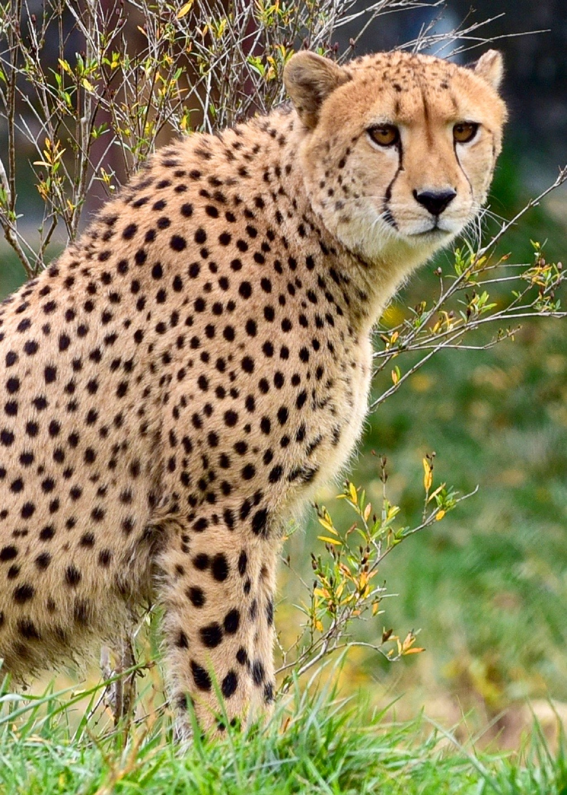

Jaguar
jaguars tend to be the bulkiest of their peers as they are one of the
largest felines in the Americas! Their spots are very similar to those
of a leopard but there are some key differences. The jaguar's spots in
the middle of the body tend to be mostly connected rings and many times
you can spot a tiny little dot within. They like to live in forested
areas as well!
Cheetah

When compared to the other two big cats, cheetahs are very lean. They
also only have dots as opposed to the ring-like shapes that can be found
on both jaguars and leopards. One other stand-out feature is on the
cheetah's face. They have lines that starts at their eyes and curve
around to their mouth. cheetahs can usually be found in grasslands or
desserts.
Leopard
In terms of size, jaguars fall squarely in between the cheetah and the
jaguar. While leopards have ring-like spots along their bodies, they are
more disconnected and that signature tiny dot is usually not found. When
compared to the jaguar the spots on its face also lean toward the
smaller side. These guys live anywhere from deserts to forests and
everything in-between.